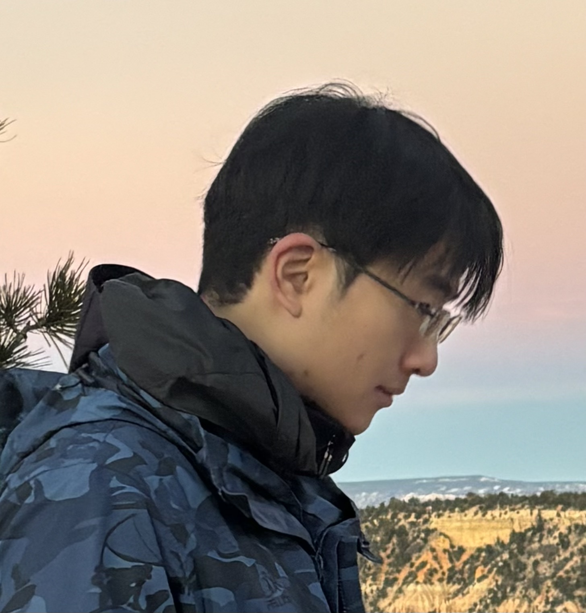
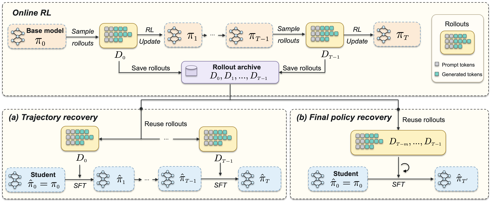
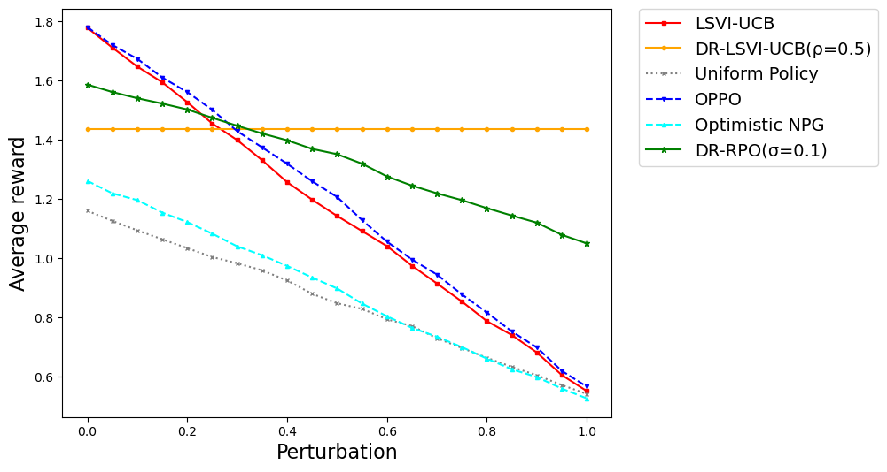
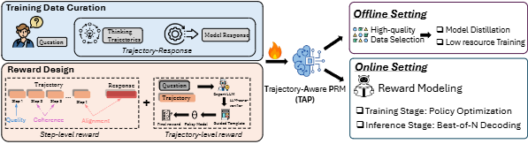
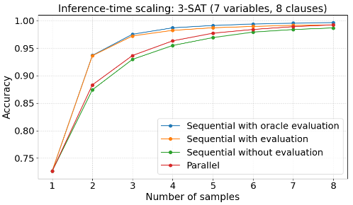
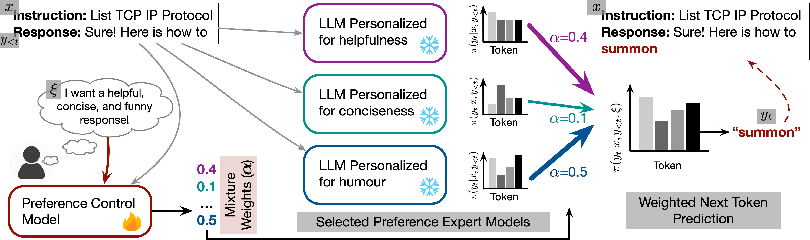
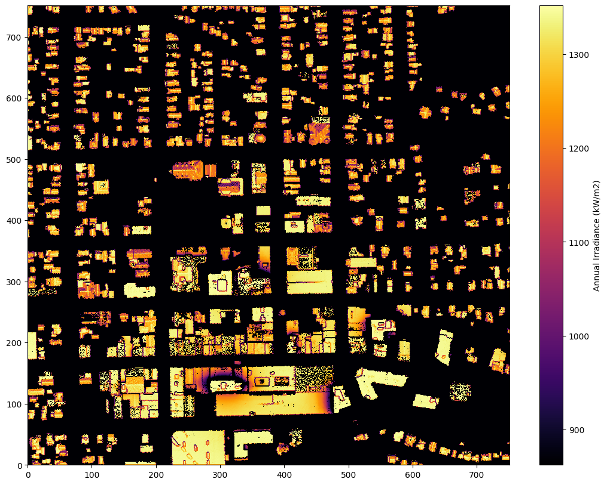

Jingwen GuI am a MSCS student at the University of Illinois, Urbana-Champaign, advised by Professor Hao Peng. My research ranges over RLHF, RLVR, and robotics. I graduated from Cornell University in 2026, where I was fortunate enough to have worked with Prof. Wen Sun and Prof. Timur Dogan. My ultimate research objective is to develop reinforcement learning paradigms that enable agents to think, feel, and act in interesting ways. Email | Google Scholar | GitHub | CV |
 |
News
|
|
Publications  Policy Regularized Distributionally Robust Markov Decision Processes with Linear Function Approximation
Preprint
  Learning to Self-Correct through Chain-of-Thought Verification
ICML 2025, 2nd Workshop on Test-Time Adaptation: Putting Updates to the Test (PUT)
  Virtual Horizon Method: Fast shading calculations for UBEM using lidar data rasterization
Building Simulation, 2025
|
|
ProjectsKV-Cache Management with Reinforcement Learning
Course project for CS4756: Robot Learning, advised by Prof.Sanjiban Choudhury. Devised a method that trains an RL policy to intelligently compress the KV-cache of a transformer LLM during inference, enabling near-constant space usage for LLM deployment.
|
|